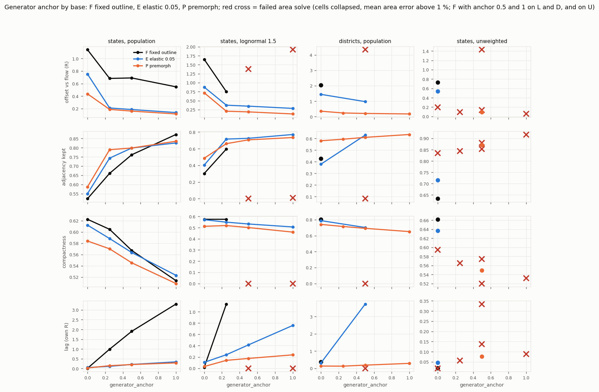
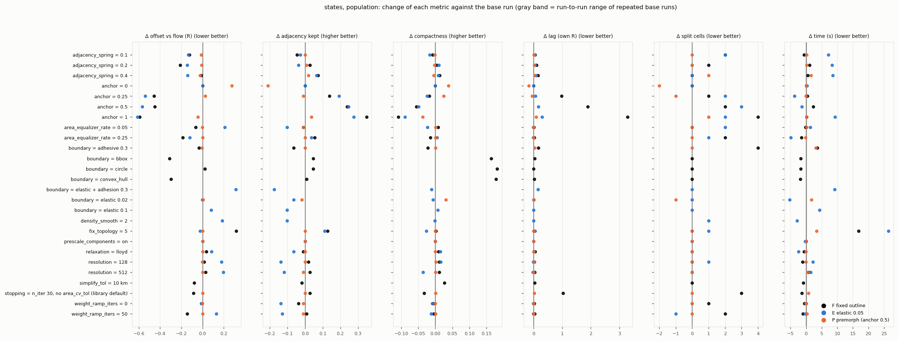
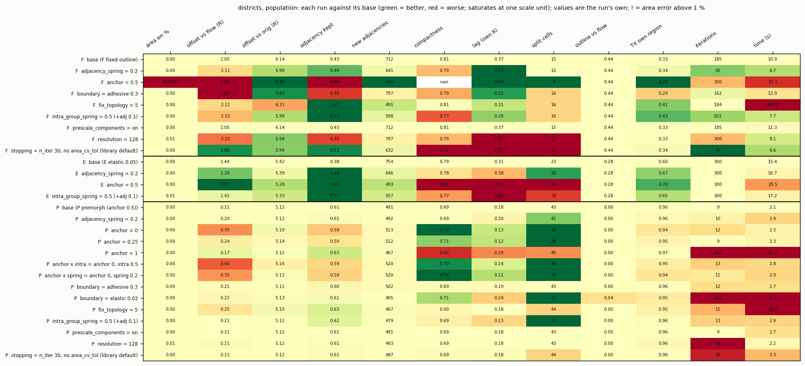
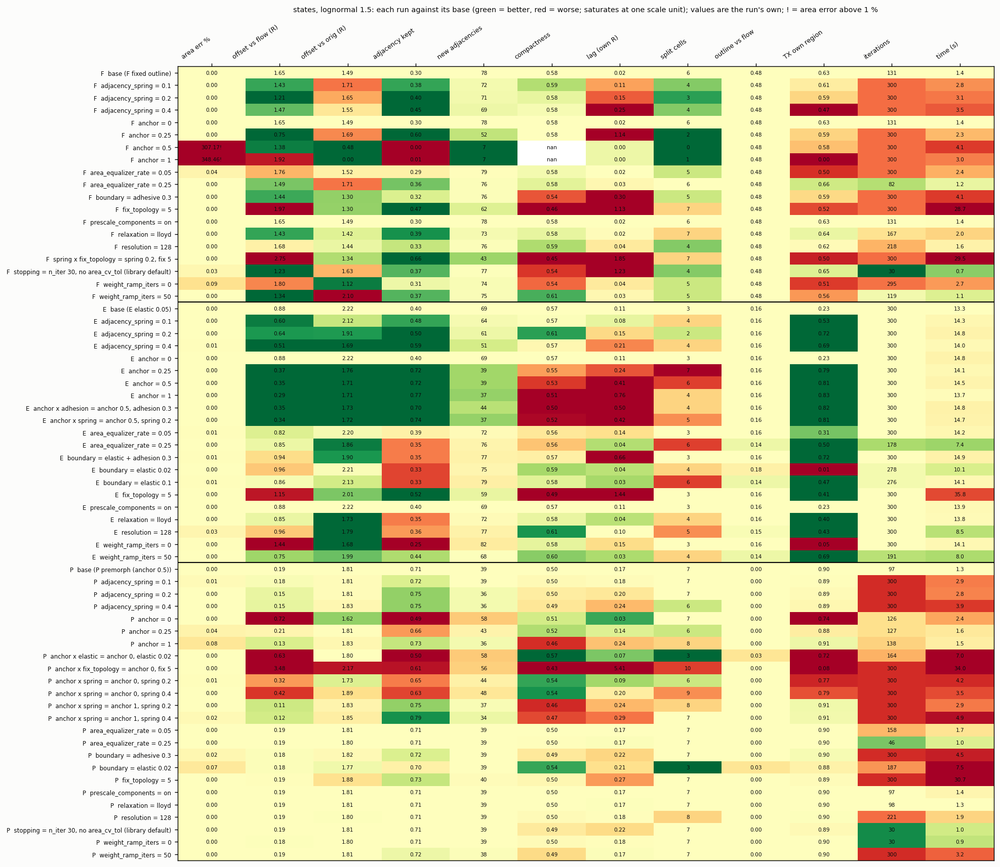
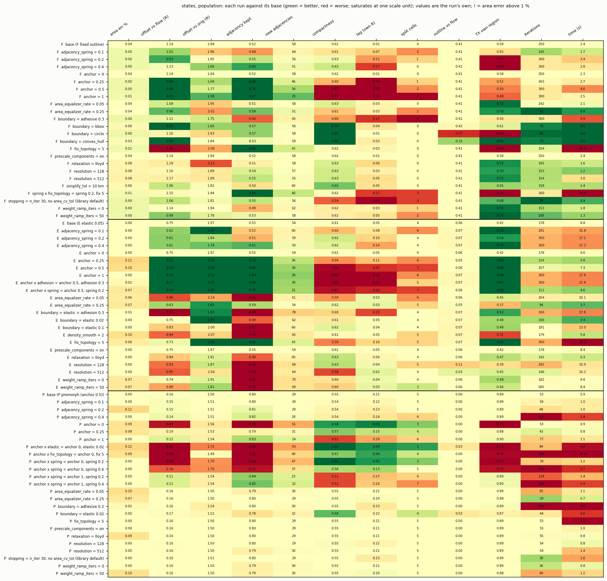
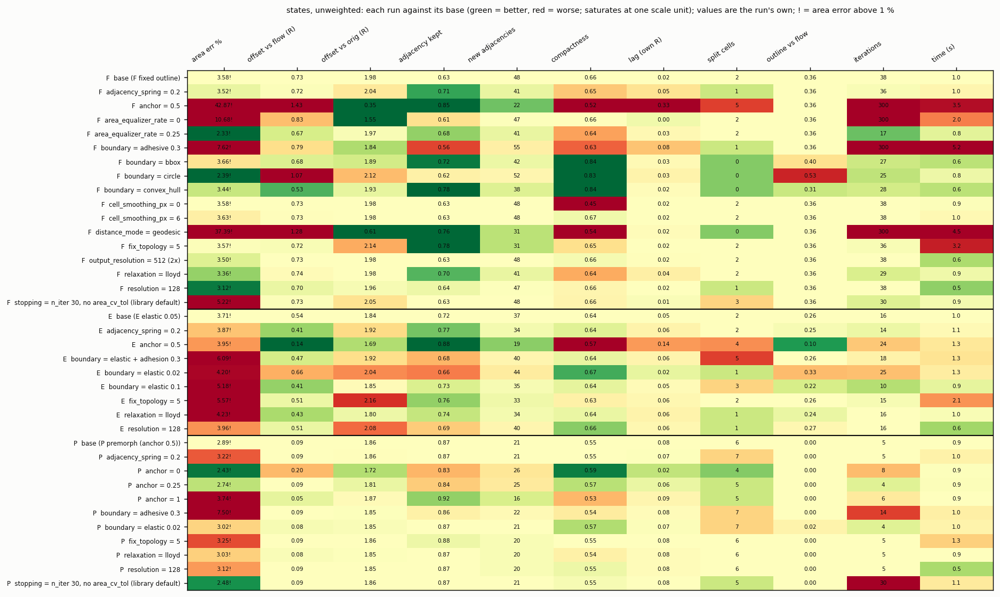
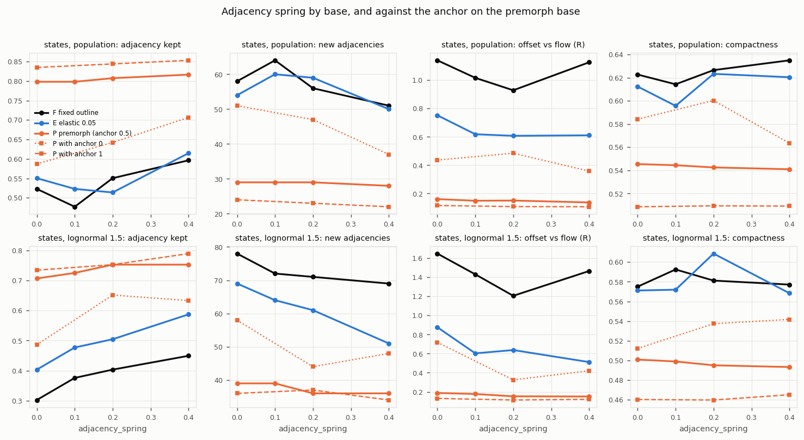
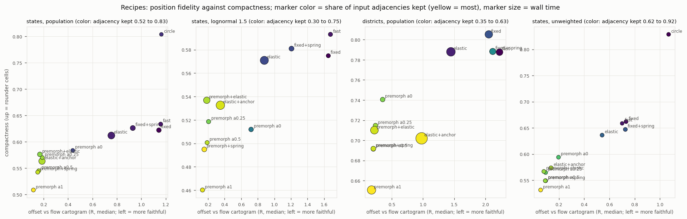

One-factor-at-a-time screen with selected pairs (209 runs) around three bases (fixed outline, elastic boundary, premorph) on weighted states, lognormal-weight states, districts and unweighted states. Premorph plus the generator anchor dominates on position fidelity and adjacency at the lowest cost. The anchor helps with premorph or the elastic boundary, but on the fixed outline the exact area solve fails (cells collapse). Springs and topology repair are mostly redundant once the anchor is on. prescale_components, output_resolution and simplify_tol have no measurable effect here.
An investigation; nothing in the library was changed. 209 runs (S 78, L 65, U 38, D 28; 20 of them pairs). Repeated base runs gave identical metrics (3 repeats on S, 2 for P on L and D, 2 for E on U), so differences against a base are effects, not noise; changes below 0.05 R, 0.02 in adjacency kept and 0.01 in compactness are treated as negligible because single trajectories on F and E are sensitive to small changes. Reproduce: NUMBA_NUM_THREADS=8 uv run python run_experiments.py S,U,L,D from a checkout of feat/voronoi-premorph (about 40 minutes; resumes from data/runs.jsonl), then uv run python make_figures.py > data/tables.md.
ElasticBoundary(0.05); **P** = premorph=True (flow morph, then a rigid run on the morphed regions with generator_anchor 0.5). Factor levels are applied to one base at a time.| dataset | base | area err % | offset vs flow (R) | offset vs orig (R) | adjacency kept | new adj | compact | lag | split | outline vs flow | TX own | it | time (s) |
|---|---|---|---|---|---|---|---|---|---|---|---|---|---|
| S | F fixed | 0.04 | 1.14 | 1.84 | 0.52 | 58 | 0.62 | 0.01 | 0 | 0.41 | 0.58 | 250 | 2.4 |
| S | E elastic 0.05 | 0.00 | 0.75 | 1.97 | 0.55 | 54 | 0.61 | 0.05 | 4 | 0.06 | 0.42 | 178 | 8.8 |
| S | P premorph | 0.00 | 0.16 | 1.50 | 0.80 | 29 | 0.55 | 0.21 | 5 | 0.00 | 0.89 | 53 | 0.9 |
| L | F | 0.00 | 1.65 | 1.49 | 0.30 | 78 | 0.58 | 0.02 | 6 | 0.48 | 0.63 | 131 | 1.4 |
| L | E | 0.00 | 0.88 | 2.22 | 0.40 | 69 | 0.57 | 0.11 | 3 | 0.16 | 0.23 | 300 | 13.3 |
| L | P | 0.00 | 0.19 | 1.81 | 0.71 | 39 | 0.50 | 0.17 | 7 | 0.00 | 0.90 | 97 | 1.3 |
| D | F | 0.00 | 2.05 | 6.14 | 0.43 | 712 | 0.81 | 0.37 | 15 | 0.44 | 0.33 | 185 | 10.9 |
| D | E | 0.00 | 1.44 | 5.42 | 0.38 | 754 | 0.79 | 0.31 | 23 | 0.28 | 0.60 | 300 | 15.4 |
| D | P | 0.00 | 0.21 | 5.12 | 0.61 | 491 | 0.69 | 0.18 | 43 | 0.00 | 0.96 | 9 | 2.1 |
| U | F | 3.58 | 0.73 | 1.98 | 0.63 | 48 | 0.66 | 0.02 | 2 | 0.36 | 0.13 | 38 | 1.0 |
| U | E | 3.71 | 0.54 | 1.84 | 0.72 | 37 | 0.64 | 0.05 | 2 | 0.26 | 0.16 | 16 | 1.0 |
| U | P | 2.89 | 0.09 | 1.86 | 0.87 | 21 | 0.55 | 0.08 | 6 | 0.00 | 0.79 | 5 | 0.9 |
The premorph base is the most faithful (offset vs flow 0.09 to 0.21 R against 0.54 to 2.05 R), keeps the most input adjacencies (0.61 to 0.87 against 0.30 to 0.72), has the fewest new adjacencies and is the fastest (0.9 to 2.1 s against 1.0 to 15.4 s). It pays in compactness (0.50 to 0.69 against 0.57 to 0.81) and split cells on the districts (43 against 15 to 23). Unweighted runs are not exact: area error 2.9 to 3.7 % (cells from the upsampled raster).
| pair | finding |
|---|---|
| anchor x base | anchor helps on P and E, fails on F (collapsed cells on L, D; 43 % error unweighted) |
| anchor x spring (P, E) | with the anchor on, the spring adds at most 0.02 to 0.04 adjacency kept; without it (P anchor 0) spring 0.4 raises adjacency 0.59 to 0.71 (S), still below anchor 0.25 alone (0.79) |
| anchor x fix_topology (P) | without the anchor, repair raises adjacency 0.59 to 0.66 (S) at 28 times the time and wrecks L (offset 3.5 R); with the anchor it adds nothing |
| anchor x elastic (P) | premorph + elastic 0.02 with anchor 0: offset 0.51 R against 0.17 R with anchor 0.5 |
| anchor x adhesion (E) | adhesion adds nothing and runs to n_iter |
| spring x fix_topology (F) | adjacency 0.69 (S), best on F, but 26 s and Texas own 0.10 |
| intra spring x anchor (D, P) | anchor 0 + intra 0.5: offset 0.40 R, adjacency 0.59, worse than the anchor alone (0.21 R, 0.61) |
VoronoiOptions() has n_iter 30 and no area_cv_tol. Weighted runs still have exact areas, but on F the generators are not settled: lag 1.0 (S), 1.2 (L), 5.7 (D) own radii, converged=False. P with 30 iterations matches its converged result. Many correct runs report converged=False only because the raster area CV did not drop below area_cv_tol before n_iter, although the area error is 0.00 %.
| recipe | settings | S: offset vs flow / adjacency / compact / time | L | D | U |
|---|---|---|---|---|---|
| fixed (current) | default backend | 1.14 / 0.52 / 0.62 / 2.4 s | 1.65 / 0.30 / 0.58 / 1.4 s | 2.05 / 0.43 / 0.81 / 10.9 s | 0.73 / 0.63 / 0.66 / 1.0 s |
| fast | fixed, resolution 128 | 1.16 / 0.54 / 0.63 / 1.2 s | 1.68 / 0.33 / 0.59 / 1.6 s | 2.22 / 0.35 / 0.79 / 8.1 s | 0.70 / 0.64 / 0.66 / 0.5 s |
| round outline | boundary="convex_hull" | 0.84 / 0.53 / 0.80 / 0.5 s | - | - | 0.53 / 0.78 / 0.84 / 0.6 s |
| elastic | ElasticBoundary(0.05) | 0.75 / 0.55 / 0.61 / 8.8 s | 0.88 / 0.40 / 0.57 / 13.3 s | 1.44 / 0.38 / 0.79 / 15.4 s | 0.54 / 0.72 / 0.64 / 1.0 s |
| elastic + anchor | ElasticBoundary(0.05), anchor 0.5 | 0.19 / 0.80 / 0.56 / 7.3 s | 0.35 / 0.72 / 0.53 / 14.5 s | 0.97 / 0.63 / 0.70 / 29.5 s | 0.14 / 0.88 / 0.57 / 1.3 s |
| faithful (premorph=True) | premorph, anchor 0.5 | 0.16 / 0.80 / 0.55 / 0.9 s | 0.19 / 0.71 / 0.50 / 1.3 s | 0.21 / 0.61 / 0.69 / 2.1 s | 0.09 / 0.87 / 0.55 / 0.9 s |
| premorph, anchor 0.25 | premorph, generator_anchor 0.25 | 0.19 / 0.79 / 0.57 / 0.8 s | 0.21 / 0.66 / 0.52 / 1.6 s | 0.24 / 0.59 / 0.72 / 2.3 s | 0.09 / 0.84 / 0.57 / 0.9 s |
| premorph + smooth outline | premorph, ElasticBoundary(0.02) | 0.17 / 0.78 / 0.58 / 2.6 s | 0.18 / 0.70 / 0.54 / 7.5 s | 0.22 / 0.61 / 0.71 / 11.7 s | 0.08 / 0.87 / 0.57 / 1.0 s |
Paths: U = unweighted, W = weighted raster, P = premorph. ExactBackend is out of scope.
| option | default | verdict |
|---|---|---|
premorph | None (True = preset_balanced, n_iter 400) | keep: best fidelity, adjacency and speed |
generator_anchor | None (0.5 with premorph, else 0) | keep; only useful with premorph or elastic |
boundary spec | "union" | keep (a shape choice) |
ElasticBoundary(strength) | 0.3 (docs use 0.02 to 0.05) | keep; use 0.02 to 0.05 |
resolution | 300 | keep |
adjacency_spring / intra_group_spring | 0.0 / None | advanced; redundant with the anchor |
fix_topology | None | dominated: 4 to 40 times the time, harmful with weights |
area_equalizer_rate / weight_ramp_iters | 0.1 / 10 | make internal |
relaxation | "overrelax" | make internal |
output_resolution / cell_smoothing_px | None / 3 | make internal (cosmetic) |
AdhesiveBoundary, elastic adhesion_strength, density_smooth | - | dominated; deprecate the first two |
prescale_components | False | no effect on these inputs; keep for disconnected data |
distance_mode="geodesic" | euclidean | unweighted only |
n_iter / area_cv_tol | 30 / None | keep; 30 is too few for fixed and elastic runs |
weights, premorph, boundary, group_by, backend, options; RasterBackend resolution, boundary (None or ElasticBoundary), generator_anchor, distance_mode (unweighted only), the springs as advanced options for runs without premorph; ElasticBoundary strength; VoronoiOptions n_iter, tol, area_cv_tol, area_error_tol, simplify_tol, prescale_components, fix_topology as advanced and documented for unweighted runs.relaxation, area_equalizer_rate, weight_ramp_iters, output_resolution, cell_smoothing_px, density_smooth, step_scale, min_boundary_points, adj_min_shared_length. Deprecation candidates: AdhesiveBoundary and ElasticBoundary.adhesion_strength.premorph=True; (2) smooth outline = premorph + ElasticBoundary(0.02); (3) original outline = default with n_iter about 300 and area_cv_tol 0.05; (4) round outline = boundary="convex_hull" or "circle".generator_anchor > 0 without premorph and without ElasticBoundary (or resolve None to 0.5 for elastic as well); warn that fix_topology with weights is slow and can damage positions; document that adjacency_spring has no effect with premorph; document AdhesiveBoundary as superseded; raise n_iter or document n_iter 300 with area_cv_tol 0.05 for weighted fixed and elastic runs; base converged on the output area error and generator displacement instead of the raster area CV.
Anchor x base on all four datasets; red crosses = failed area solve.

States, population: change of each metric against the base, per option level, colored by base.

Districts, population.

States, lognormal weights.

States, population: every run against its base (green better, red worse; text = the run's own value; ! = area error above 1 %).

States, unweighted.

Adjacency spring by base, and against the anchor on the premorph base.

Recipes: offset vs flow against compactness, color = adjacency kept, size = time.